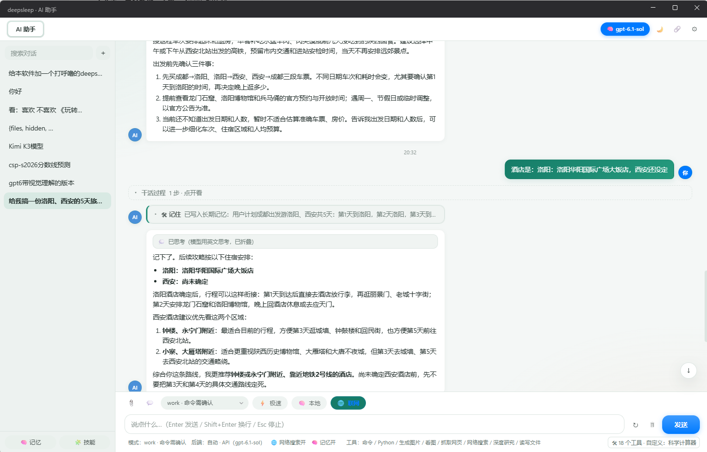
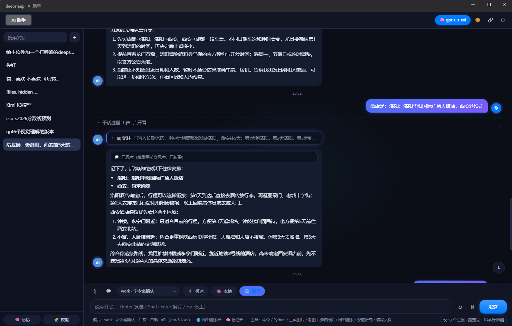

deepsleep（深眠）不只会聊天：它能读写你电脑上的文件、跑命令、搜网络、做带来源的深度研究、 看图、画图，还能长期记住你的偏好。内核与界面分离，界面是纯 HTML —— 桌面上跑、浏览器里也跑。
智谱开放平台（open.bigmodel.cn）的免费模型全家桶，客户端与网页版都已内置预置项；网页版还内置了一把免费 Key，打开就能用。
日常对话、写代码、改文档、当 Agent 的大脑。支持流式输出，长上下文。
把截图、照片、表格图片丢给它：认字、读懂界面、总结图表、照着图写代码。
一句话出图，生成的图片会存到 data\images\，聊天里直接预览。
免费模型有并发限流，人多了会排队；把自己的 Key 填进 ⚙ 设置就能走自己的额度（Key 只存在你浏览器/本机）。
不是「告诉你怎么做」，而是直接做完再给你结果。
快问快答用「网络搜索」；要调研就交给「深度研究」：它自己拆题、多轮搜索、抓正文，最后写出带来源的报告存到 data\research\。
整理资料、批量改名、跑脚本、装依赖。work 模式每一步先问你，boom 模式全自动。
生成图片、读懂图片、生成短视频都是内置工具。图像生成 / 图像识别 / 视频生成的接口地址、API Key、模型名都能自己换（智谱、硅基流动、OpenAI 或任意兼容网关），设置里选平台自动填好。没填 Key 时聊天和画图直接用内置免费 Key。
你的习惯、项目背景、常用路径写进记忆，以后每轮对话都自动带上。
把常做的事存成技能与快捷指令，一句话触发整套流程；Agent 集群还能分角色同时干活。
输入框右侧的圆环就是当前对话的上下文占用：蓝→橙→红，悬停看 token 数与消息条数，什么时候该开新对话不用猜。同一处还能切模式、换模型、发消息。
一个随时可拖动的桌面小浮窗，不用开主窗口也能派活、看进度。
客户端自己检查新版本，国内走 Gitee、国外走 GitHub，装完自动重启，不用你管。
一串 6 位配对码，把两台设备连起来：同一网络走点对点直连，不同网络自动开临时加密隧道，连上就能在浏览器里远程操作对方电脑（画面 + 鼠标键盘，手机触屏也行）。
桌面客户端在「设置 → 超远程提问」点一下开隧道；内核版加 --tunnel 同样一条命令搞定。都是免注册公网地址 + 带令牌的配对链接，手机存成书签，人在外面也能指挥这台电脑。
界面是纯 HTML + CSS。深色「dsh · 深眠」与浅色「dsh · 晨光」各有一整套自带 CSS：
点右上角 ☀️ / 🌙 就整套换掉（配色、氛围光、消息动效、滚动条全都不一样），即时生效、不用重启。
还能再叠加 .dslp 皮肤包做自己的外观。


两套都尊重系统的「减少动态效果」设置；截图为 3.2.2 实际运行画面。
不只是「一个会调工具的聊天窗口」。deepsleep 正在升级成一套常驻、可调度、可自愈的多 Agent 系统： 把「理解与路由」和「执行」彻底分开，状态全部落库，长任务更稳、断点可续、Agent 之间互不污染上下文。
会话不再是一个截到 4000 字的快照文件，而是 data/sessions/<sid>.json + 索引，
带 kind(main/worker/router)、parentSid、state、时间戳与摘要；原子写入、旧数据自动迁移、可按状态查询。
这是 Router 与 Watchdog 的地基，也提供 sessionList / sessionGet 接口。
每次「拆分任务」现在由 Router 统一收口：它持有一份共享简报（全局目标 / 权限边界 / 约束 / 同批角色 / 已产出路径）， 只把这个下发给你那几个上下文隔离的 Worker，彼此私有历史互不可见。路由判定是毫秒级规则， 为什么拆、拆几路，界面上写得明明白白（设置 → SuperAgent 架构 → 路由诊断）。
Router 与每个 Worker 都是 Session 库里真实存在的会话（kind=router/worker、parentSid、
状态从 active 走到 done/stopped、结果压成摘要），重启后还能按父子关系和状态查回来。
设置 → 查看会话架构 能直接看到这棵两层的树。
旁路还有订阅直通、多信道交互与外部看门狗。这一层对普通用户无感：界面和用法不变，只是长任务更稳。
适合「不想安装完整客户端」或「想在手机 / 另一台电脑上遥控本机」的人。
Windows 用 deepsleep-core-3.2.2-win-x64.zip；Linux 用 deepsleep_3.2.2_amd64.deb / deepsleep-3.2.2-1.x86_64.rpm（或免安装的 deepsleep-3.2.2-linux-x64.tar.gz）；macOS 用 deepsleep-core-3.2.2-osx-arm64.tar.gz。桌面版和内核版能力完全一样，区别只是桌面版默认开窗口；没有桌面环境就加 --headless 只跑服务（Linux 桌面需要 libwebkit2gtk-4.1-0）。
deepsleep-core.exe，Linux / macOS 执行 ./deepsleep.sh
Windows 会打开本机首页；Linux / macOS 会直接开一个原生桌面窗口，双击即用（服务器 / SSH 加 --headless 只跑服务）。
同时会打印端口与配对令牌，方便在别的设备上连。
本机首页点「内核版网页」即可；在外面就用 这个页面，填端口 + 令牌。
也可以直接把 #p=端口&t=令牌 拼在后面打开。
--tunnel 走内网穿透
运行 deepsleep-core --tunnel，内核自动建一条免注册的公网隧道（手写隧道，直接用系统自带的 ssh，不用下任何组件），
窗口里会打印一条配对链接（令牌已经带好）。
把那条链接在手机上打开、存成书签，出门在外也能直接指挥这台电脑。
打不开多半是运营商 DNS 不解析隧道域名，把手机 DNS 换成 114.114.114.114 再试。
桌面客户端不用敲命令：装好后在「设置 → 超远程提问」里点一下就能开 / 关隧道，能力和这里完全一样。
想用自己的穿透工具（frp / cpolar / ngrok / ssh -R 都行）：
deepsleep-core --public --tunnel-cmd "你的穿透命令"，内核会自己从输出里抓公网地址。
换令牌：deepsleep-core --new-token；换端口：--port 8888。
Linux / macOS 上数据默认放在 ~/.local/share/deepsleep（macOS 是 ~/Library/Application Support/deepsleep）。
不用注册、不用配置、不用懂什么叫 NAT 打洞 —— 对着一串数字输进去就连上了，连上就能远程操作对方电脑。
桌面版：点工具栏的 🔗 图标 →「生成配对码」。
内核版 / CMD 模式：输入 打开超级连接（也可以 /superlink）。
配对码 5 分钟内有效，过期自动作废；连上以后也不会一直留着。
手机 / 平板 / 另一台电脑的浏览器打开：
deepsleep.liziserver.site/superlink/?type=你的配对码
或者在自己的 deepsleep 里点 🔗 输入这 6 位数字。
同一网络里走点对点局域网直连（延迟最低）；不在一个网络时，自动开一条临时加密隧道把两边牵上，连上之后立刻关掉隧道，数据保持点对点。
连上后点「打开远程桌面」：浏览器里直接看到对方屏幕，鼠标、键盘、滚轮、手机触屏都能操作；也能点「打开完整控制台」用整套能力。
两个源内容一致，按网络选：海外用 GitHub（整包），国内用 Gitee（安装包是分片，配合并器）。 客户端支持 OTA，装上以后升级不用再来这页。
| 文件 | 说明 | |
|---|---|---|
deepsleep-Setup.exe | 安装版（推荐）：自动装到本机、带开始菜单与 OTA 静默升级 | 下载 |
deepsleep-3.2.2-win-x64.zip | 便携版：解压就能跑，不写注册表 | 下载 |
deepsleep-core-3.2.2-win-x64.zip | 内核版（Windows）：解压即用，配合网页端操控本机 | 下载 |
deepsleep_3.2.2_amd64.deb | 桌面版 · Debian / Ubuntu（x86_64）：sudo apt install ./deepsleep_3.2.2_amd64.deb，装完在应用菜单里搜 deepsleep |
下载 |
deepsleep_3.2.2_arm64.deb | 桌面版 · Debian / Ubuntu（ARM64）：同上 | 下载 |
deepsleep-3.2.2-1.x86_64.rpm | 桌面版 · Fedora / RHEL / openSUSE（x86_64）：sudo dnf install ./deepsleep-3.2.2-1.x86_64.rpm |
下载 |
deepsleep-3.2.2-1.aarch64.rpm | 桌面版 · Fedora / RHEL / openSUSE（aarch64）：同上 | 下载 |
deepsleep-3.2.2-linux-x64.tar.gz | 免安装 · Linux x86_64：解压后 ./deepsleep.sh 直接开窗口（服务器加 --headless 只跑服务） |
下载 |
deepsleep-3.2.2-linux-arm64.tar.gz | 免安装 · Linux ARM64（同上） | 下载 |
deepsleep-core-3.2.2-osx-arm64.tar.gz | macOS 内核版（Apple 芯片）：解压后 ./deepsleep.sh 开窗口，服务器加 --headless |
下载 |
deepsleep-core-3.2.2-osx-x64.tar.gz | macOS 内核版（Intel）：同上 | 下载 |
deepsleep-universal-3.2.2.zip | 万能安装程序：一个小脚本，按你的系统自动下对应平台的包 | 下载 |
| 网页版 | 不用下载，直接用浏览器打开 | 打开网页版 |
| 文件 | 说明 | |
|---|---|---|
deepsleep-Setup.exe.part1deepsleep-Setup.exe.part2 | 安装版（推荐）：Gitee 单附件上限 100 MB，安装包被切成 2 片。两片都要下，和下面的合并器放同一个文件夹，双击合并器即可拼回整包并自动安装 | 下载 part1 下载 part2 |
deepsleep-merge-setup.exe | 分片合并器（必下）：校验 SHA-256、拼回 deepsleep-Setup.exe 后自动启动安装 |
下载 |
deepsleep-3.2.2-win-x64.zip | 便携版：解压就能跑，不写注册表 | 下载 |
deepsleep-core-3.2.2-win-x64.zip | 内核版（Windows）：解压即用，配合网页端操控本机 | 下载 |
deepsleep_3.2.2_amd64.deb | 桌面版 · Debian / Ubuntu（x86_64）：sudo apt install ./deepsleep_3.2.2_amd64.deb，装完在应用菜单里搜 deepsleep |
下载 |
deepsleep_3.2.2_arm64.deb | 桌面版 · Debian / Ubuntu（ARM64）：同上 | 下载 |
deepsleep-3.2.2-1.x86_64.rpm | 桌面版 · Fedora / RHEL / openSUSE（x86_64）：sudo dnf install ./deepsleep-3.2.2-1.x86_64.rpm |
下载 |
deepsleep-3.2.2-1.aarch64.rpm | 桌面版 · Fedora / RHEL / openSUSE（aarch64）：同上 | 下载 |
deepsleep-3.2.2-linux-x64.tar.gz | 免安装 · Linux x86_64：解压后 ./deepsleep.sh 直接开窗口（服务器加 --headless 只跑服务） |
下载 |
deepsleep-3.2.2-linux-arm64.tar.gz | 免安装 · Linux ARM64（同上） | 下载 |
deepsleep-core-3.2.2-osx-arm64.tar.gz | macOS 内核版（Apple 芯片）：解压后 ./deepsleep.sh 开窗口，服务器加 --headless |
下载 |
deepsleep-core-3.2.2-osx-x64.tar.gz | macOS 内核版（Intel）：同上 | 下载 |
| 网页版 | 不用下载，直接用浏览器打开 | 打开网页版 |
第一次运行 Windows 可能提示「未知发布者」，点「更多信息 → 仍要运行」即可。安装包 SHA256 写在 Release 说明里。
Linux 上桌面包依赖系统自带的 WebView：Debian / Ubuntu 装 libwebkit2gtk-4.1-0 与 libgtk-3-0，Fedora / RHEL 装 webkit2gtk4.1（.deb / .rpm 会自动带上 Debian 侧的依赖）。
macOS 只发行内核版（deepsleep-core-*-osx-*.tar.gz，不再出 .dmg）：
解压后 ./deepsleep.sh 会在系统自带 WebView 里开窗口，服务器加 --headless 只跑服务；
需要 macOS 14 或更高版本（该下限来自窗口库二进制本身），首次运行被 Gatekeeper 拦时
右键图标 →「打开」→ 再点一次「打开」即可。
在 Gitee 下载的安装包是分片的（deepsleep-Setup.exe.part1/.part2，单附件上限 100 MB）：
把所有分片和 deepsleep-merge-setup.exe 放进同一个文件夹，双击合并器就会按序拼回整包、
校验 SHA-256 并自动启动安装程序。GitHub 上是完整包，不需要合并。
sudo apt install ./deepsleep_*.deb 或 sudo dnf install ./deepsleep-*.rpm，macOS 解压 deepsleep-core-*-osx-*.tar.gz 后 ./deepsleep.sh。.tar.gz，解压后 ./deepsleep.sh 直接开原生桌面窗口；服务器 / SSH 加 --headless 就只跑内核服务、用浏览器连（Linux 桌面需要系统自带 libwebkit2gtk-4.1-0）。macOS 现在只发行内核版（.dmg 已下线，Apple 芯片上会被 Gatekeeper 判成「已损坏」）。